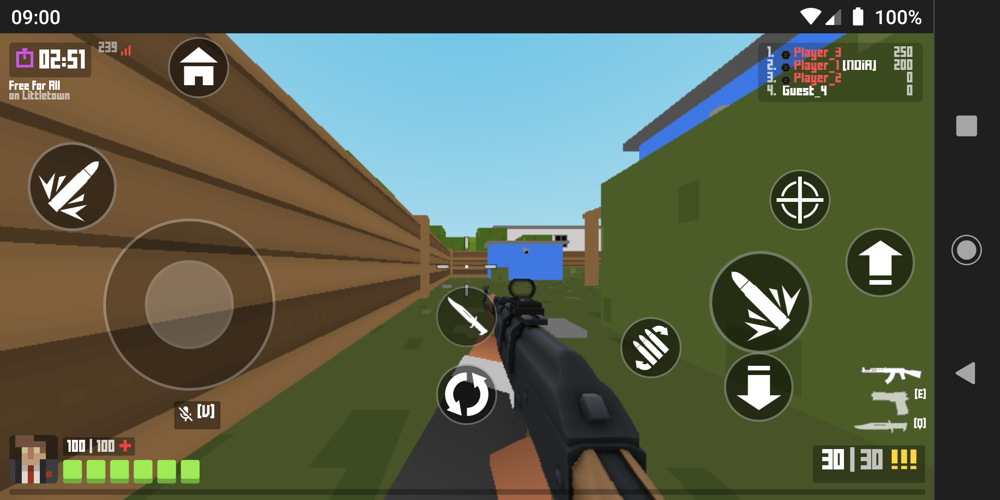

Roda no Browser! Não há por que se preocupar com armazenamento do dispositivo, uma vez que o jogo se dispõe apenas de um navegador web Navegadores disponíveis:
Também roda no seu celular... Graças à responsividade da página, o jogo também pode ser jogado por um dispositivo móvel com touch controls 